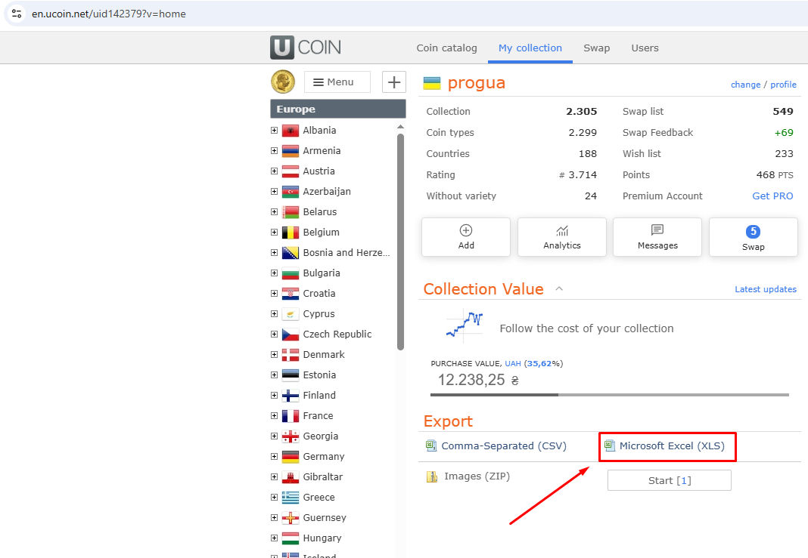

Імпорт з uCoin

Експорт з uCoin
- На сайті uCoin перемкніть мову сайту на English (вибір мови вгорі або внизу сторінки).
- Відкрийте свою колекцію та експортуйте її в Excel (
.xlsx). Збережіть файл на комп'ютері.
Імпорт
- File → Import from uCoin (.xlsx)/Файл → Імпорт з uCoin (.xlsx) (або кнопка Import/Імпорт) і виберіть файл.
- Програма показує, скільки рядків прочитано і в яких рядках помилки (вони пропускаються). Підтвердьте імпорт.
- Поточна колекція замінюється файлом. Перед цим робиться копія бази:
Db\…before-import-<дата>.bak.
Що зберігається при повторному імпорті
Новіший експорт uCoin можна імпортувати будь-коли. Для монет, які є в новому файлі, програма зберігає:
- зв'язки з Numista (#Numista, випуск, індекс рідкісності, фразу пошуку Numista) і ✓ вивантажених примірників;
- фото монет і примірників.
У підсумку видно, скільки зв'язків і фото збережено та втрачено. Фото монет, яких більше немає у файлі, переносяться до Photos\_before-import-<дата>\.
Список обміну з uCoin
На uCoin відкрийте свій список обміну й експортуйте його в Excel (сайт англійською), потім — та сама команда File → Import from uCoin (.xlsx)/Файл → Імпорт з uCoin (.xlsx): програма розпізнає список обміну за колонками.
- Монети потрапляють у вузол For swap/На обмін; колекція не змінюється. Монета, яка є й у колекції, — та сама монета (це видно в колонці Swap/Обмін); монета лише на обмін — нова монета.
- В експорті обміну немає періоду: він береться з монети тієї ж країни з тим самим номером у каталозі, інакше лишається порожнім (виберіть його в картці монети).
- Інформація, бронь і приватна примітка записуються в коментар примірника.
- Повторний імпорт оновлює список обміну: нові примірники додаються, змінені — оновлюються; про примірники, яких немає у файлі, програма питає, чи прибрати їх зі списку обміну.
- Монета на обмін одразу, без запитів, отримує зв'язок з Numista від пов'язаної монети тієї ж країни з тим самим номером у каталозі: тип, випуск (якщо він уже відомий для цього року) і зображення з каталогу. Решта — Auto-link/Автозв'язок, як завжди.
- Вивантаження списку обміну на Numista буде в наступній версії.
Примірник можна перенести між колекцією та списком обміну в картці монети (List/Список). У вузлі For swap/На обмін команди Add/Додати і Add from sample.../Додати за зразком... додають монету на обмін. Повторний імпорт колекції список обміну не змінює.
Імпорт з вашої колекції Numista
Монети, які ви самі додали на Numista і яких немає в uCoin (наприклад античні), теж можна імпортувати: Numista → Import from my Numista collection/Numista → Імпорт з моєї колекції Numista.
- У вікні — предмети вашої колекції Numista, яких ще немає в програмі.
- Відберіть за Issuer/Емітент (наприклад Roman Empire), позначте предмети й натисніть Import/Імпортувати.
- Для кожного предмета програма створює монету (країна — за емітентом Numista, період — за правителем, валюта, номінал, роки, номер у каталозі) і ваш примірник (стан, кількість, дата купівлі, коментар), пов'язує його з Numista (✓) і завантажує характеристики типу та фото — фото типу й ваші власні фото предмета на Numista.
Нова країна (наприклад Roman Empire) з'являється в No continent/Без континенту: вкажіть її континент і
«зникла держава» в Довідниках. Роки можуть бути діапазоном (174–179) і до нашої ери (44 до н. е.).
Ціна в іншій валюті, ніж гривня, додається до коментаря.
Монета вже є в програмі (з uCoin)
Колонка In the program/У програмі показує, що буде з кожним предметом:
- Пов'язати з … — така монета вже є в програмі: її буде пов'язано з предметом (✓, характеристики, фото), без другої монети.
Вона знаходиться за типом Numista або за номером у каталозі з роком і країною; номер без підномера теж підходить
(
C# 118в uCoin =C# 118.3на Numista). - нова монета — додасться нова монета. Якщо насправді монета в програмі є (інший номер, інша назва), виділіть рядок, натисніть Coin in the program.../Монета в програмі... (або двічі клацніть колонку In the program/У програмі) і виберіть її: спершу — монети того ж номера, потім — того ж номіналу. Перший рядок, нова монета, скасовує вибір.
- неоднозначно — підходить кілька монет: виберіть одну так само, інакше предмет буде пропущено.